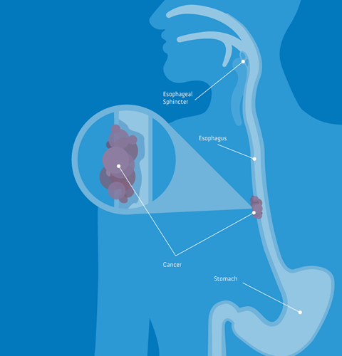

The esophagus is a hollow muscular tube that’s responsible for moving food from the throat to the stomach. Esophageal cancer can occur when a malignant tumor forms in the lining of the esophagus.
As the tumor grows, it can affect the deep tissues and muscle of the esophagus. A tumor can appear anywhere along the length of the esophagus, including where the esophagus and the stomach meet.
Experts believe that the irritation of esophageal cells contributes to the development of cancer.
People at increased risk of esophageal cancer include the men are three times more likely than women to develop esophageal cancer.
Your chances of developing esophageal cancer increase with age. If you’re over the age of 45, your risk may be higher.
Causes
Experts believe that the irritation of esophageal cells contributes to the development of cancer. Some habits and conditions that can cause irritation include:
consuming alcohol
smoking
having a reflux disorder- such as gastroesophageal reflux disease (GERD).
having Barrett’s esophagus- which is a condition characterized by damaged esophageal lining due to GERD
being overweight
not eating enough fruits and vegetables
having achalasia- a condition where the muscle at the bottom of the esophagus doesn’t relax properly.

Survival Rate
NATIONAL CANCER INSTITUTE’s SURVEILLANCE DATABASE
Localized means that the cancer is only growing in the esophagus. It includes AJCC stage I and some stage II tumors
Regional means that the cancer has spread to nearby lymph nodes or tissues.
SATTISTICS
It is estimated that 15,850 deaths (12,850 men and 3,000 women) from this disease will occur this year. Esophageal cancer is the seventh most common cause of cancer death among men.
The 5-year survival rate of people with cancer located only in the esophagus is 43%.
SURVIVAL BY STAGES
Signs and Symptoms
Most esophageal cancers do not cause symptoms until they have reached an advanced stage, when they are harder to treat.
Chest pain
Trouble swallowing
Chronic cough
Vomiting
Bleeding into the esophagus.
Weight loss
Preventing Skin Cancer
Banish the booze. Drinking in moderation is fine, but too much alcohol can significantly raise your risk of getting one of the main types of esophageal cancer.
Toss your cigarettes. Smoking is one of the biggest risk factors for esophageal cancer, and there are of course a number of other health problems that can arise from smoking as well.
Watch your weight. Being obese not only increases your risk for heart disease and diabetes, it's also a plus-sized indicator of your risk for esophageal cancer.